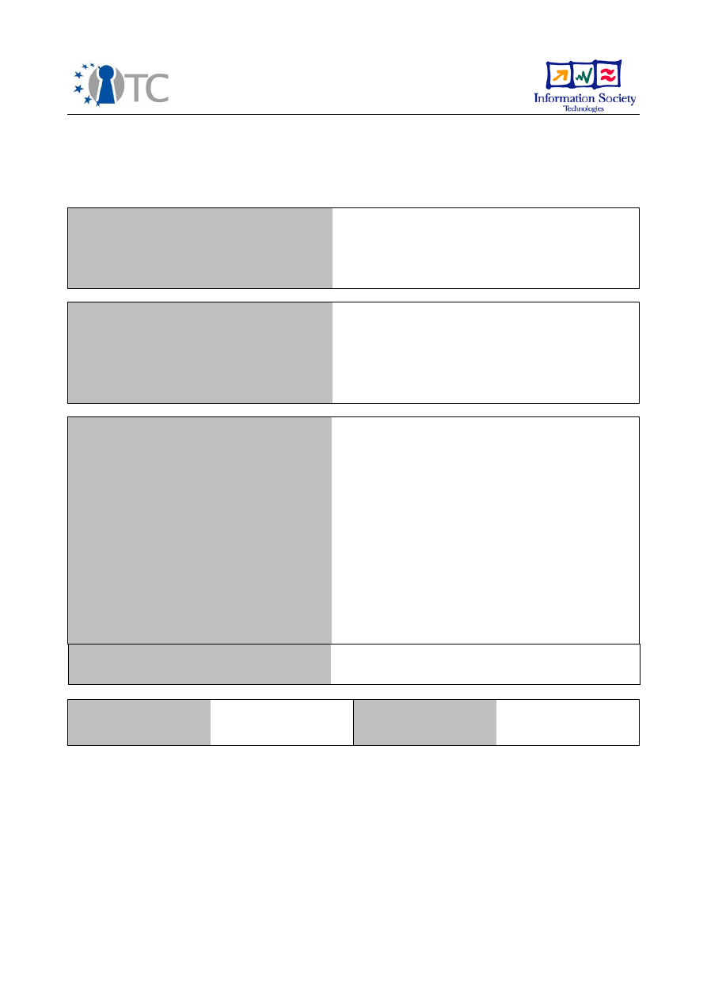
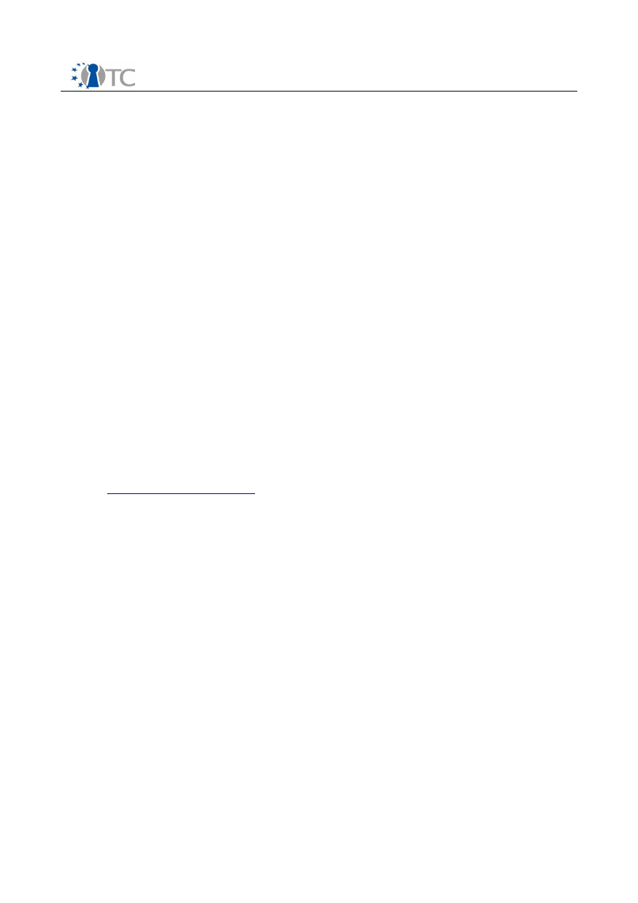

D10.10 Final Training Material
Project number
IST-027635
Project acronym
Open_TC
Project title
Open Trusted Computing
Deliverable type
Report
Deliverable reference number
IST-027635/D10.10/V1.0 FINAL
Deliverable title
Final Training Material
WP contributing to the deliverable
WP10
Due date
Oct 2008 - M36
Actual submission date
April 30th, 2009
Responsible Organisation
PORT
Authors
PORT (Bora Güngören, Burak Oğuz, Serdar
Tuğcu, Emre Yüce)
IAIK (Peter Lipp, Thomas Winkler, Martin
Pirker)
RHUL (Eimear Gallery, Chris Mitchell)
HP (Graeme Proudler),
CUCL (Steve Hand)
TEC (Herbert Petautschnig)
TUB (Görkem Çetin, Kadir İmamoğlu)
Abstract
This is the final collection of training material
from OpenTC partners.
Keywords
Training concepts, training plans, educational
material, Trusted Computing.
Dissemination level
Public
Revision
V1.0 FINAL
Instrument
IP
Start date of the
project
1
st
November 2005
Thematic Priority
IST
Duration
42 months

D10.10 Final Training Material
Table of Contents
1 Introduction.......................................................................................... 3
2 Partner Contributions............................................................................ 3
2.1 Academic Partners................................................................................................ 3
2.1.1 Royal Holloway, University of London.............................................................. 3
2.1.2 Institute for Applied Information Processing and Communication.................... 3
2.1.3 TUBITAK............................................................................................................ 4
2.1.4 Seminars, workshops and educational talks..................................................... 4
2.2 Non-Academic Partners......................................................................................... 4
2.2.1 Technikon......................................................................................................... 4
2.2.2 Portakal Teknoloji............................................................................................. 5
3 Royal Holloway, University of London..................................................... 6
4 Institute for Applied Information Processing and Communication....... 1248
5 TUBITAK.......................................................................................... 1715
6 Technikon........................................................................................ 1936
7 Portakal Teknoloji............................................................................ 1971
Open_TC Deliverable D10.10
2
D10.10 Final Training Material
1
Introduction
Training activities have been integrated into WP10 to ensure knowledge transfer to
potential users of trusted computing technologies. Target audiences include
engineers, undergraduate and postgraduate students, researchers and industrial
executives, and training activities have taken the form of seminars, summer schools,
workshops and on-line courses. During the early stages of the project, activities
focused on the detailed planning and definition of the training courses/material that in
the latter stages have been developed and delivered by OpenTC members. This
document includes a summary of the partner contributions with respect to training
activities. Following this, the training material of the partners is included.
2
Partner Contributions
The training activities of the OpenTC project incorporates both academic and pro-
fessional training.
2.1 Academic Partners
As university courses on trusted computing are still rare, OpenTC academic partners
are continuing their academic training. RHUL and IAIK have graduate level courses
devoted to trusted computing, whereas TUB OpenTC members are contributing to an
undergraduate course in security which covers trusted computing.
2.1.1 Royal Holloway, University of London
A full 11-week course on trusted computing (comprising 11 3-hour lectures) was
initiated in January 2007 (academic year 2006/07) and has been delivered since as
part of the MSc in Information Security at RHUL. This included two guest lectures given
by Graeme Proudler from HP Labs Bristol and Steve Hand from the University of
Cambridge in 2007 and Graeme Proudler and Chris Dalton from HP Labs Bristol in
2008 and 2009. Two pieces of coursework and an examination were also written. The
OpenTC proof-of-concept prototype was presented during a lab session in 2009.
RHUL has also presented a series of tutorials on trusted computing to staff, post-
doctoral research assistants and PhD students.
More recently, RHUL has seen the introduction of a new 'security-focused'
undergraduate degree in computer science. As part of this undergraduate degree
programme a course in trusted computing will be offered in 2009/10, again building
directly on the training materials developed within the OpenTC project.
2.1.2 Institute for Applied Information Processing and Communication
A course titled “Selected Topics of IT-security: Trusted Computing” was initiated by
IAIK in March 2007, with approximately 30 registered students. This course covers the
theoretical foundations of trusted computing. Students must also complete practical
exercises using TPM-emulators and components developed within OpenTC. A series of
guest lectures were also presented by David Grawrock (Intel). This course has
continued through 2008 and 2009. In 2008, students on this course were given the
opportunity to visit the educational event and scientific conference at TRUST 2008 and
given the task of writing papers on selected topics on trusted computing for
presentation. IAIK also participated in ETISS 2006, 2007 and 2008.
Open_TC Deliverable D10.10
3

D10.10 Final Training Material
2.1.3 TUB
A course titled “New Technologies in Security”, with a focus on trusted computing, was
initiated by TUB in 2006 at the Computer Engineering Department, University of
Kocaeli (Turkey). Five weeks of this course are dedicated to trusted computing
technologies. This course is now in its third year.
2.1.4 Seminars, Workshops and Educational Talks
A series of seminars have also been presented by various partners. These include the
following:
C.J. Mitchell (RHUL), “Trusted Computing: A Universal Security Infrastructure?”,
Seminar: Department of Computer Science and Software Engineering,
University of Canterbury, Christchurch, New Zealand, 21st March 2007.
C.J. Mitchell (RHUL), “Trusted Computing: Putting a Security Module on Every
Desktop”, Seminar: New Zealand Information Security Forum, Auckland, New
Zealand, 28th March 2007.
C.J. Mitchell (RHUL), “Trusted Computing: A Universal Security Infrastructure?”,
Seminar: Centre of Digital Enterprise, University of Auckland, New Zealand, 28th
March 2007.
C.J. Mitchell (RHUL), “Trusted Mobile Platforms”, Two half-day sessions given at
the Information Security Summer School (ISSS 2007), Taipei, Taiwan, 7th
August 2007.
E. Gallery and C.J. Mitchell, “Trusted Mobile Platforms”, Foundations of Security
Analysis and Design IV (FOSAD 2007), Bertinoro, Italy, 9
th
-15
th
September 2007.
IAIK participated in the Educational Event at Trust 2008 presenting two classes
on “How Trusted Systems are Programmed: A Practical View” and “Mobile
Trusted Computing”. RHUL also presented a session entitled “Who is the TCG
and what are the TC concepts?” at TRUST2008, 10
th
- 13
th
March 2008, Villach,
Austria.
IAIK presented a poster at Linuxtage, 28
th
- 31
st
May 2008, Berlin, Germany.
TUB presented a tutorial entitled “Trusted Virtualization and Grid Security” at
CCGrid 2008, 19
th
- 22
nd
May 2008, Lyon, France.
Eimear Gallery (RHUL), "Mobile Security and the Mobile Trusted Module", 3rd
European Trusted Infrastructure Summer School 2008 (ETISS 2008), 31
st
September - 4
th
October, 2008, Oxford, U.K.
2.2 Non-Academic Partners
2.2.1 TEC
A course titled "Project Risk Management" was held in Halmstadt, Sweden at the start
of the project in November 2006 with 30 engineering students. One goal was to
introduce the students at Halmstadt to the OpenTC project. The students were asked
to identify and evaluate potential risks connected with the deployment of trusted
computing. Thereafter, with the second goal of ensuring a deeper understanding the
technology, the students were divided into groups of 4-5 people to examine an
OpenTC case study. The students had to choose one of the following: (a)
Governmental Agency, (b) Private Person, (c) SME (Small and Medium Enterprise) or
Open_TC Deliverable D10.10
4

D10.10 Final Training Material
(d) Industry, and identify the potential influence of trusted computing on their chosen
entity/organisation.
2.2.2 PORT
Portakal Teknoloji continued to add to their training material which examines the
OpenTC architecture. The material presented in this deliverable is now complete and
includes the following 7 topics, in line with the course objectives planned in previous
WP10c deliverables.
1. What is trusted computing?
2. TPM and TSS implementations.
3. OpenTC goals and objectives.
4. Basic management interface.
5. An everyday application (MEITC).
6. A security related application (DRM).
7. Using the OpenTC infrastructure (EFS).
Chapters 2-3 focus on background material and on the OpenTC design, chapters 4-7
focus on work completed within the OpenTC project. In particular, chapters 5-7 focus
on work completed within WP06. The material has been presented at a series of
seminars organised at METU Institute of Applied Mathematics to MSc and PhD students
in Cryptography. However, no formal course code has been assigned yet.
The full D10.10 Final Training Material is available on the Technikon FTP Server:
Server:
ftp://www.technikon.com
Username: opentc
Password: 0p3nTCDel
Open_TC Deliverable D10.10
5
Document Outline